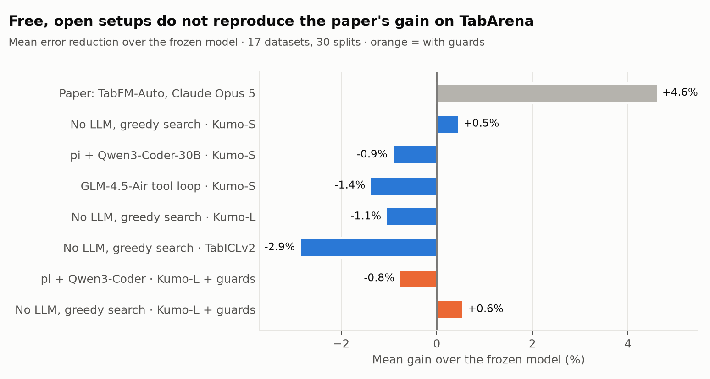
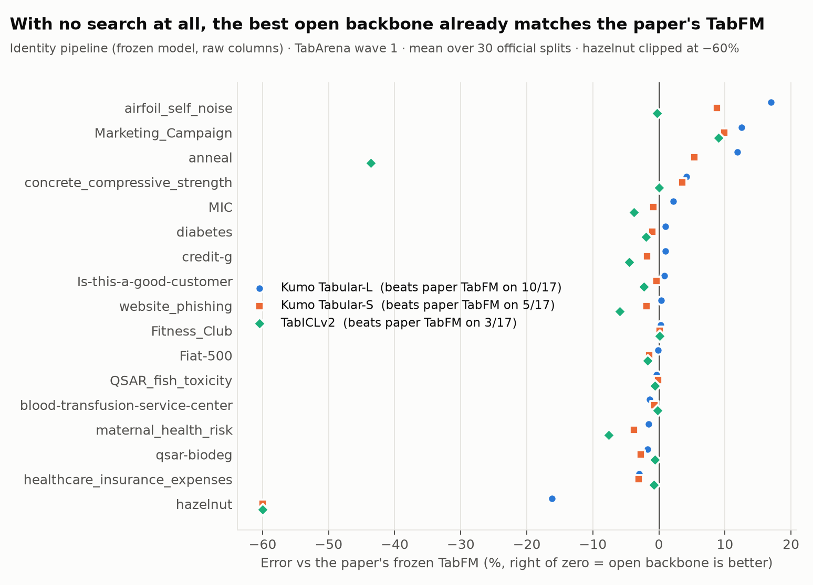
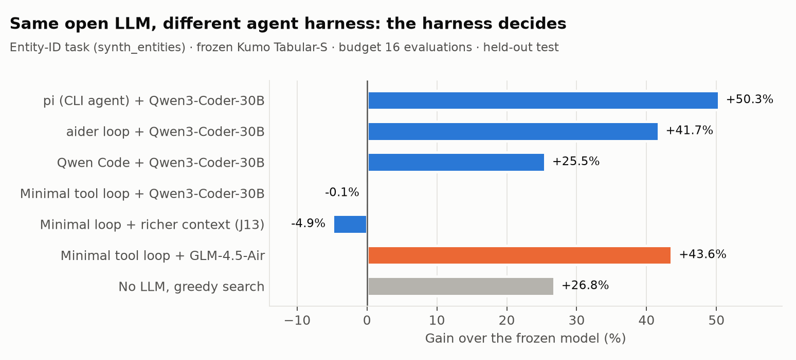
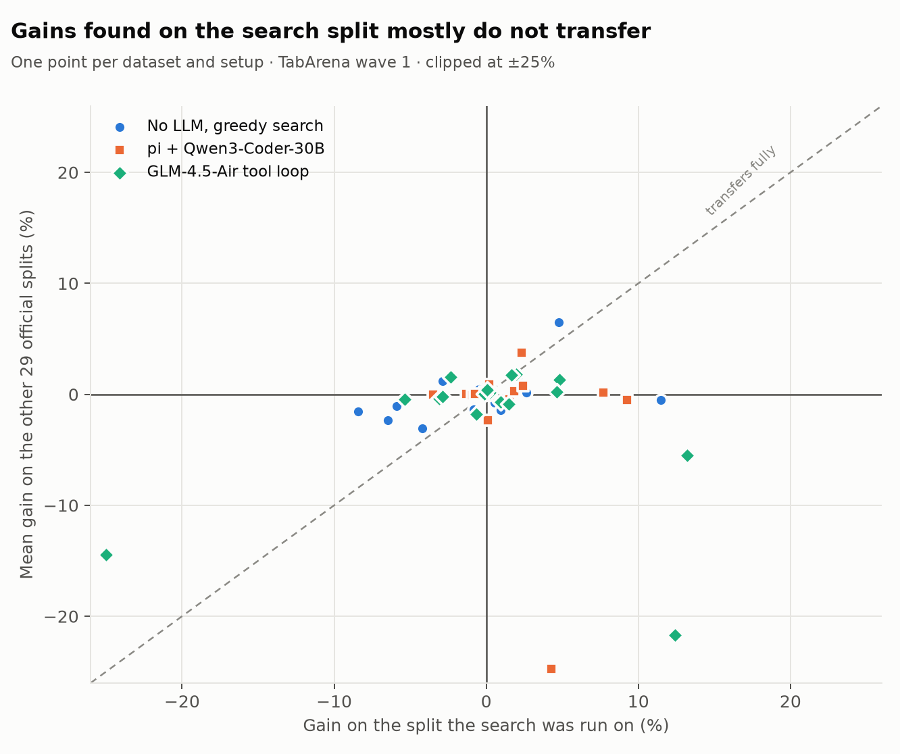

open-tabfm-auto · draft, 3 October 2026 · companion paper: Which Layer Is the Embedding?The paper's claim is a mechanism: keep the predictor frozen, let an LLM turn column names and task text into code around it, and judge every candidate with a cheap cross-validation (CV) signal. Two things make the result hard to reuse: the frozen model is not released, and the search spends thousands of frontier-LLM calls per dataset. We separate the mechanism from those ingredients and measure what each is worth, keeping the pipeline contract, the judge and the evaluation protocol identical to the paper.
Contributions. (i) An open, MIT-licensed implementation of the full loop with pluggable backbones, LLMs and harnesses, plus a SQL mode. (ii) A backbone study across seven open tabular foundation models (TFMs). (iii) An LLM and harness study including a no-LLM baseline. (iv) A diagnosis of why gains do not reproduce at small scale, and three guards that make the search safe. The use of the same frozen models as entity embedders is a separate question; it is studied in the companion paper.
LLM-driven feature engineering and data science agents. CAAFE (Hollmann et al., 2023) uses an LLM to write features from column descriptions and keeps a feature only if cross-validation improves; AIDE (Jiang et al., 2025) searches over whole solution scripts. TabFM-Auto (Fu et al., 2026) moves this search around a frozen tabular foundation model and reports the top of TabArena. Our study asks which parts of that result depend on closed components.
Tabular foundation models. TabPFN (Hollmann et al., 2025), TabICL (Qu et al., 2025) and the Kumo Tabular family (NVIDIA, 2026) predict in context: the training rows are the prompt and no weights are fitted. They are strong on small tables, which is exactly where a pipeline search has the least data to judge its own changes.
Selection bias. Choosing among many candidates by a noisy validation score overfits the validation data (Cawley & Talbot, 2010). Our split-transfer analysis (Section 4) measures this effect directly for pipeline search on small tables.
Contract. A pipeline is a Python file with four hooks (preprocess, engineer ≤500 columns, sample context views, postprocess) and constructor settings for the frozen model. The identity pipeline P0 passes the raw columns through. The judge is 3-fold cross-validation (CV) on the training split, run in a sandbox the agent calls as tabfm-eval; the held-out split never enters the workspace. The best-CV candidate P* is frozen and scored once.
Protocol. TabArena v0.1, the 17 datasets with ≤2,500 rows; search on the training part of the first official split, then P0 and P* scored on all 30 official splits; the paper's per-dataset numbers (its Table 9) are vendored for direct comparison. Gain is the relative error reduction of P* over P0. Budgets are 16–24 evaluations per dataset (the paper: about 100).
Components. Backbones from Hugging Face; LLMs served by vLLM on one H200 each; harnesses: Claude Code (reference, local only), an OpenAI-compatible five-tool loop, free CLI agents (pi, aider, Qwen Code), and a greedy coordinate search over generic operations with no LLM.

No open setup reproduces the paper's gain (Fig. 1). The greedy no-LLM search around Kumo Tabular-S gains +0.5% on average (9 of 17 datasets improve); pi + Qwen3-Coder-30B averages −0.9% and the GLM-4.5-Air tool loop −1.4%. The paper reports +4.6% with Claude Opus on the same datasets. Where the paper gains most (anneal +17.6%, Marketing_Campaign +15.8%, airfoil +14.6%) the open LLM agents lose (pi: −5.2%, −14.2%, +3.7%).
| setup | backbone | mean gain | datasets losing >1% |
|---|---|---|---|
| paper: TabFM-Auto, Claude Opus | TabFM (closed) | +4.6% | — |
| greedy search, no LLM | Kumo-S | +0.5% | — |
| pi + Qwen3-Coder-30B | Kumo-S | −0.9% | — |
| tool loop + GLM-4.5-Air | Kumo-S | −1.4% | — |
| greedy search, no LLM | Kumo-L | −1.1% | 6 |
| greedy search, no LLM | TabICLv2 | −2.9% | — |
| greedy search + guards | Kumo-L | +0.56% | 1 |
| pi + Qwen3-Coder + guards | Kumo-L | −0.79% | — |

The best open backbone needs no search (Fig. 2). Kumo Tabular-L's identity pipeline beats the paper's TabFM on 10 of 17 datasets (mean +1.6% relative) and the paper's searched TabFM-Auto on 4; the same greedy search then lowers its average by 1.1%. TabICLv2 is 10.9% behind TabFM and loses 2.9% more under search. The stronger the backbone, the less a generic feature search can add, and the more a noisy judge costs.

The harness matters more than the LLM (Fig. 3). On a synthetic task whose description names an entity structure, Qwen3-Coder-30B cuts the error by 50% inside pi, 42% inside an aider loop and 26% inside Qwen Code, and by about 0% inside our minimal tool loop; giving the minimal loop the same starting context (file listing, pipeline, data summary) does not close the gap (−4.9%), so the difference is in how the agent iterates. GLM-4.5-Air finds the same frequency encodings even in the minimal loop (+44%). All three CLI agents converge on the same role×resource counts. These gains do not carry to TabArena, where no dataset text names such a structure.

Why: the search selects CV noise (Fig. 4). A candidate chosen by 3-fold CV on one split improves only 41–57% of the other splits of the same data, a coin flip, for every setup. With 500–2,500 rows a CV difference of one or two percent is inside the noise. Raising the budget to 64 evaluations on the five datasets where the paper gains most makes every setup worse (heuristic +2.9% → +1.1%, pi −2.9% → −4.3%, GLM +0.1% → −8.4%), and the LLM agents stop on their own after 8–22 evaluations. The backbone itself is nondeterministic (±1% RMSE, ±30% small-fold log-loss on repeated calls), a noise term now removed by seeding.
Mitigations. A repeated 3×3-fold judge on tables under 1,000 rows moves the heuristic from +1.4% to +2.1% and pi from −1.4% to −0.5% on those tables, and shrinks pi's loss on a 569-row table from −17% to −5%. Conservative final picks (replace P0 only if the paired per-fold improvement exceeds 1 or 2 standard errors; or average the three best candidates), re-scored on all splits, change the heuristic's mean gain from +0.25% to +0.49% / +0.29% / +0.25% and cut the datasets losing more than 1% from 6 to 3 at the 2-s.e. gate, but every LLM family keeps at least one dataset whose candidate is confidently better in CV and 10–15% worse everywhere else. CV-based rules cannot catch those; an acceptance slice of the training split that the pick must also beat P0 on is the guard that does (Section 5).
| LLM | physics | entities | breast_cancer | airfoil | blood | credit-g | min / search |
|---|---|---|---|---|---|---|---|
| GLM-4.5-Air-FP8 (106B-A12B) | +5.1% | +43.6% | −38.9% | −0.9% | +1.4% | +1.4% | 5 |
| gpt-oss-20b | +4.1% | −8.9% | −7.9% | +2.0% | −1.1% | −0.2% | 5 |
| Qwen3-Coder-30B-A3B (two runs) | +1.3 / +2.9% | −1.1 / +1.0% | −2.9 / −57% | −0.9 / +2.3% | +2.5 / −0.9% | −0.3 / −0.4% | 1.5 |
| Qwen3-32B (reasoning) | −0.2% | −3.8% | −2.9% | +0.7% | +0.6% | +0.3% | 17–30 |
| no LLM, greedy search | +0.6% | +25–29% | 0% | — | — | — | ~10 |
Every open setup overfits the smallest table (569 rows): the CV-best candidate is worse on test by 3% to 57% under a single 3-fold judge.
End-to-end test of the guards (J17). With Kumo Tabular-L, a repeated judge on small tables, a 1-s.e. gated pick and a 20% acceptance slice, the no-LLM search goes from −1.07% (6 datasets losing more than 1%) to +0.56% (1 dataset), and its pipeline beats the paper's TabFM-Auto on 5 of 17 datasets. The guards mostly refuse changes (median gain 0.0%); anneal moves from −8.8% to +5.4%. The same guards around pi + Qwen3-Coder give −0.79%, with one failure that passes every check (Marketing_Campaign −14.7%).
Recommendation. For a free, open setup on small tables: use Kumo Tabular-L with the identity pipeline; add the guarded no-LLM search (--cv-repeats auto --select gated1 --accept-holdout 0.2) when a small, reliable gain is worth an hour of GPU; use an LLM agent (pi with Qwen3-Coder-30B, or GLM-4.5-Air in a tool loop) only when the task text names an entity structure.
Limitations. Our search budgets are 4–6× below the paper's, and the paper's own agent (Claude Opus) was not run on the cluster, so the gap mixes the LLM, the backbone and the budget; Figure 1 and Table 1 separate the first two but not the third. The 64-evaluation runs (Section 4) suggest more budget does not help at this table size. Each setup was run once per dataset; the 30 test splits make the averages stable, but the search itself is one draw. The frozen backbone was nondeterministic until we added seeding, which adds noise to comparisons made before that change.
Conclusion. The mechanism of TabFM-Auto, open-sourced, does not reproduce the paper's gain on small tables with free models. The reason is not mainly the LLM: a strong open backbone already matches the paper's frozen model, and a cross-validation judge on a few hundred rows cannot tell real gains from noise. With guards the search becomes safe and slightly positive. Larger tables, or a judge with more data, are where the open loop should be tested next.
Experiments and this paper were produced with Claude Code; every number is read from the run directories by paper/fill_results.py and paper/make_figures.py.